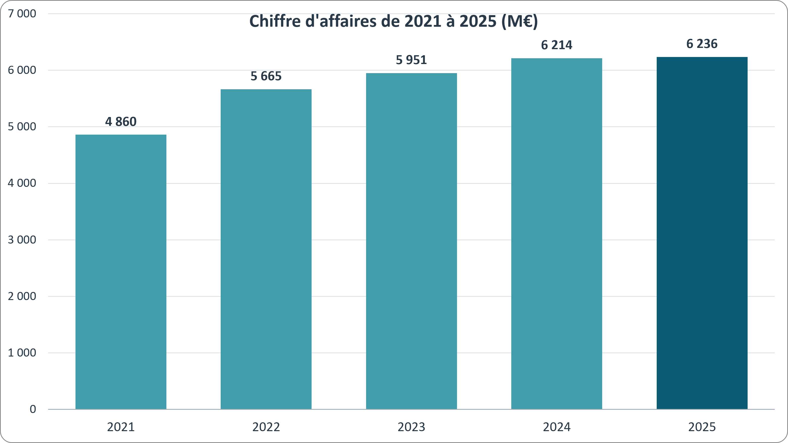
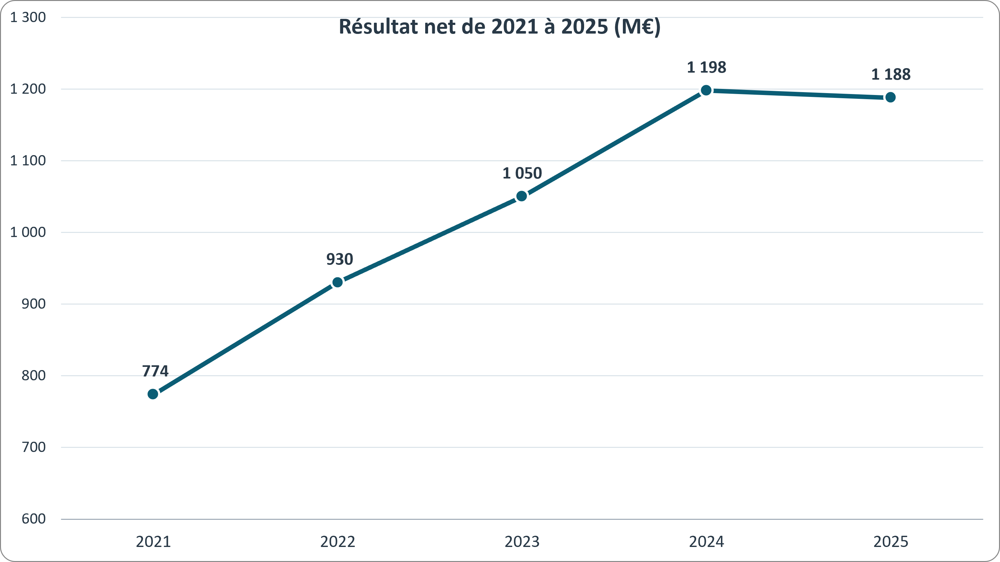
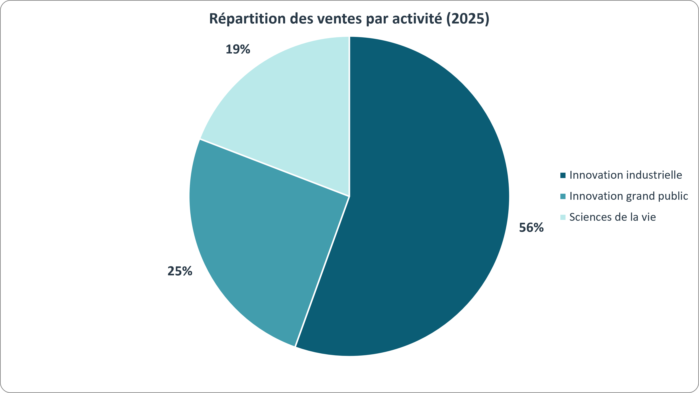
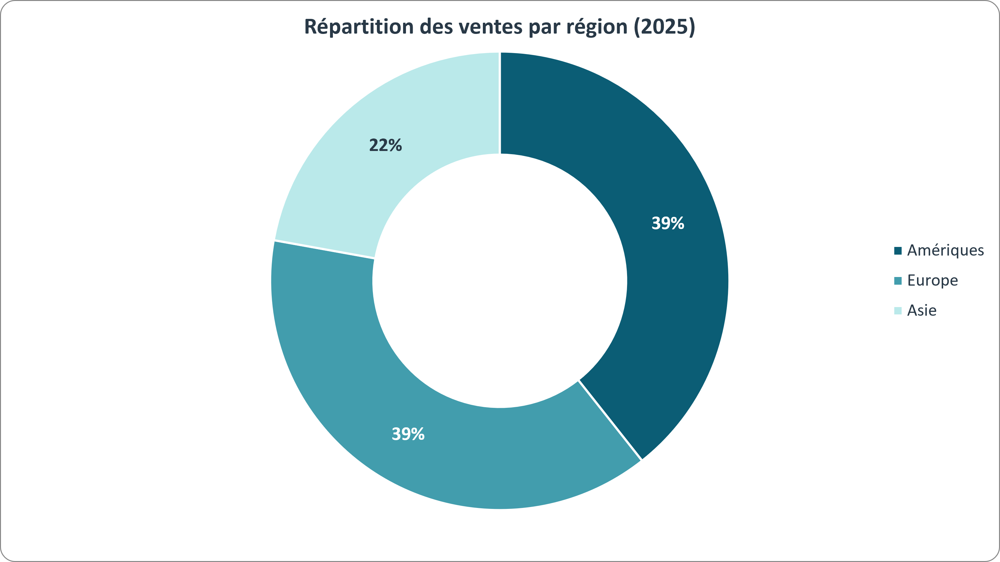
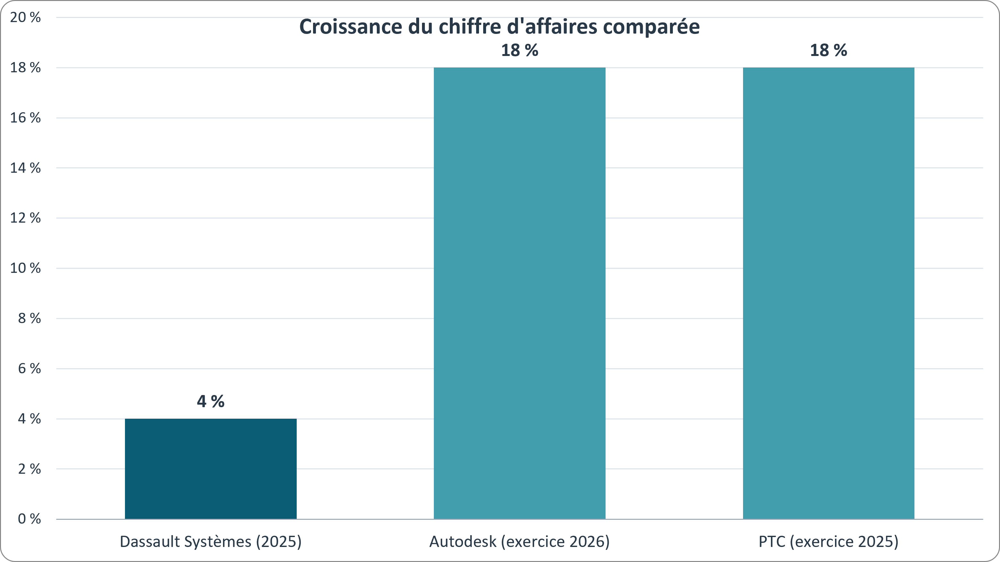

Présentation
Dassault Systèmes est une entreprise française créée en 1981. Elle est basée à Vélizy-Villacoublay et développe des logiciels qui permettent aux entreprises de concevoir, tester et améliorer leurs produits. Elle travaille notamment avec des entreprises de l'automobile, de l'aéronautique et de la santé. Dans cette partie, nous allons découvrir comment l'entreprise gagne de l'argent, quels sont ses principaux marchés et comment elle se positionne face à ses concurrents.
Le chiffre d'affaires

Le chiffre d'affaires correspond au montant des ventes réalisées par une entreprise. Pour Dassault Systèmes, il est passé de 4,86 milliards d'euros en 2021 à 6,24 milliards d'euros en 2025.
On remarque que les ventes ont bien progressé en 2022. La croissance a ensuite ralenti en 2023 et en 2024. En 2025, le chiffre d'affaires a très peu augmenté en euros par rapport à l'année précédente.
L'entreprise continue donc de vendre ses logiciels, mais elle connaît une période de croissance plus lente. Il sera intéressant de voir si elle arrive à retrouver un rythme plus élevé dans les prochaines années.
Le résultat net

Le résultat net représente ce qu'il reste à l'entreprise après avoir déduit ses charges et ses impôts. Il permet donc de savoir si elle gagne réellement de l'argent.
Entre 2021 et 2024, le résultat net de Dassault Systèmes a augmenté, passant d'environ 774 millions d'euros à 1,2 milliard d'euros. Il a ensuite légèrement baissé en 2025.
Malgré cette baisse, l'entreprise reste bénéficiaire. Elle continue donc à réaliser des profits, même si ses résultats peuvent varier d'une année à l'autre.
Les activités

Dassault Systèmes ne travaille pas dans un seul secteur. Ses logiciels sont utilisés dans l'industrie, mais aussi dans la santé et la recherche.
D'après les données présentées dans le graphique, l'innovation industrielle représente 56 % des ventes. Elle concerne notamment l'automobile, l'aéronautique et la construction navale. L'innovation grand public représente 25 %, notamment avec des logiciels comme SOLIDWORKS. Enfin, les sciences de la vie représentent 19 % et regroupent les activités liées à la santé et à la recherche médicale.
L'industrie reste donc son principal domaine d'activité. Le fait de travailler dans plusieurs secteurs lui permet aussi de ne pas dépendre uniquement d'un seul marché.
Les régions

Dassault Systèmes est présent dans plusieurs régions du monde. Les Amériques représentent environ 39 % de son chiffre d'affaires, tout comme l'Europe. L'Asie représente quant à elle environ 22 %.
Cette répartition montre que l'entreprise ne dépend pas uniquement du marché français ou européen. Elle peut compter sur des clients dans de nombreux pays.
Cette présence internationale est un avantage, même si les résultats peuvent être influencés par la situation économique de chaque région.
Comment l'entreprise gagne de l'argent
Dassault Systèmes gagne de l'argent principalement grâce à la vente de ses logiciels et aux services qui les accompagnent. Les clients peuvent acheter des licences ou choisir des abonnements pour utiliser certaines solutions.
Les abonnements et le support représentent environ 4,62 milliards d'euros, avec une progression d'environ 6 %. De leur côté, les ventes de licences à l'unité représentent environ 1,02 milliard d'euros et sont en baisse d'environ 6 %. Les revenus réguliers occupent donc une place importante dans le modèle économique de l'entreprise.
Ce fonctionnement permet de garder une relation avec les clients sur plusieurs années. En plus des logiciels, l'entreprise peut leur proposer des mises à jour, de l'assistance technique et différents services.
Les concurrents

Dassault Systèmes n'est pas la seule entreprise à proposer des logiciels de conception et de simulation. Elle doit notamment faire face à Siemens, Autodesk et PTC, qui proposent eux aussi des solutions pour les professionnels et les industriels.
En 2025, Dassault Systèmes a réalisé 6,24 milliards d'euros de chiffre d'affaires. Autodesk a réalisé environ 7,2 milliards de dollars sur son exercice 2026, tandis que PTC a réalisé environ 2,74 milliards de dollars sur son exercice 2025.
Il faut toutefois faire attention à cette comparaison : les entreprises n'utilisent pas toutes les mêmes dates de clôture et leurs chiffres sont exprimés dans des monnaies différentes.
Dassault Systèmes reste donc un acteur important du secteur. Pour conserver sa place, l'entreprise doit continuer à améliorer ses logiciels et à proposer des solutions adaptées aux besoins de ses clients.
Les prévisions
Pour 2026, Dassault Systèmes a annoncé un objectif de croissance de son chiffre d'affaires compris entre 3 % et 5 %, à taux de change constants.
L'entreprise souhaite donc repartir sur une croissance plus importante après une année 2025 moins dynamique. Cependant, ces chiffres restent des prévisions : les résultats réels dépendront notamment de la demande des clients et de la situation économique.
Bilan
Pour résumer, Dassault Systèmes est une entreprise qui réalise plusieurs milliards d'euros de chiffre d'affaires chaque année. Elle s'appuie sur ses logiciels, ses abonnements et sa présence dans différents secteurs pour développer son activité.
Son principal défi est de maintenir sa croissance et de rester compétitive face à des entreprises comme Autodesk, Siemens et PTC. Les prochaines années permettront de voir si elle atteint les objectifs annoncés pour 2026.
Pour comprendre les mots
Certains termes économiques utilisés dans cette page peuvent être difficiles à comprendre. Voici deux liens pour retrouver leurs définitions :
Sources : Site officiel de Dassault Systèmes - Relations investisseurs , publications financières d'Autodesk, de PTC et de Siemens.